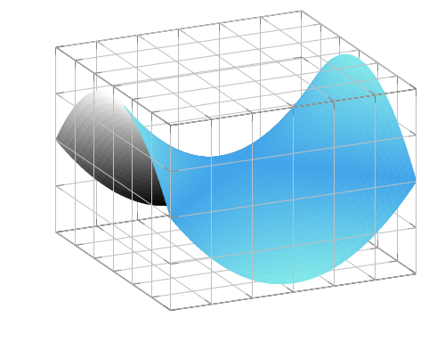

Basic Concepts of Reduced Order Modeling
Reduced order modeling is a data-driven technique that exploits the structure of parametric partial differential equations (PPDEs) to make repeated simulations of this PPDE much cheaper.
For this consider a PPDE written in the form: $F(z(\mu);\mu)=0$ where $z(\mu)$ evolves on an infinite-dimensional Hilbert space $V$.
In modeling any PDE we have to choose a discretization (particle discretization, finite element method, ...) of $V$ which will be denoted by $V_h \simeq \mathbb{R}^N$. The space $V_h$ is not infinite-dimensional but its dimension $N$ is still very large. Solving a discretized PDE in this space is typically very expensive. In reduced order modeling we utilize the fact that slightly different choices of parameters $\mu$ will give qualitatively similar solutions. We can therefore perform a few simulations in the full space $V_h$ and then make successive simulations cheaper by learning from the past simulations:
In the figure above we refer to the discretized PDE as the full order model (FOM) and to the cheaper representation (that we construct in a data-driven manner) as the reduced order model (ROM). We now introduce the solution manifold, which is a crucial concept in reduced order modeling.
The Solution Manifold
To any PPDE and a certain parameter set $\mathbb{P}$ we associate a solution manifold:
\[\mathcal{M} = \{z(\mu):F(z(\mu);\mu)=0, \mu\in\mathbb{P}\}.\]
A motivation for reduced order modeling is that even though the space $V_h$ is of very high-dimension, the solution manifold will typically be a very small space. The image here shows a two-dimensional solution manifold[1] embedded in $V_h\equiv\mathbb{R}^3$.

As an actual example of a solution manifold consider the one-dimensional wave equation [60]:
\[\partial_{tt}^2q(t,\omega;\mu) = \mu^2\partial_{\omega\omega}^2q(t,\omega;\mu)\text{ on }I\times\Omega,\]
where $I = (0,1)$ and $\Omega=(-1/2,1/2)$. As initial condition for the first derivative we have $\partial_tq(0,\omega;\mu) = -\mu\partial_\omega{}q_0(\xi;\mu)$ and furthermore $q(t,\omega;\mu)=0$ on the boundary (i.e. $\omega\in\{-1/2,1/2\}$).
The solution manifold is a two-dimensional submanifold of an infinite-dimensional function space:
\[\mathcal{M} = \{(t, \omega)\mapsto{}q(t,\omega;\mu)=q_0(\omega-\mu{}t;\mu):\mu\in\mathbb{P}\subset\mathbb{R}\}.\]
We can plot some of the points on $\mathcal{M}$ (each curve at a specific time corresponds to one point on the solution manifold):
Here we plotted the curves for the time steps (0., 0.1, 0.2, 0.3, 0.4, 0.5, 0.6, 0.7, 0.8, 0.9, 1.0) and the parameter values (0.416, 0.508, 0.6). We see that, depending on the parameter value $\mu$, the wave travels at different speeds. In reduced order modeling we try to find an approximation to the solution manifolds, i.e. model the evolution of the curve in a cheap way for different parameter values $\mu$. Neural networks offer a way of doing so efficiently!
General Workflow
In reduced order modeling we aim to construct an approximation to the solution manifold and that is ideally of a dimension not much greater than that of the solution manifold and then (approximately) solve the so-called reduced equations in the small space. Constructing this approximation to the solution manifold can be divided into three steps[2]:
- Discretize the PDE, i.e. find $V\to{}V_h$.
- Solve the discretized PDE on $V_h$ for a set of parameter instances $\mu\in\mathbb{P}$.
- Build a reduced basis with the data obtained from having solved the discretized PDE. This step consists of finding two mappings: the reduction $\mathcal{P}$ and the reconstruction $\mathcal{R}$.
The third step can be done with various machine learning (ML) techniques. Traditionally the most popular of these has been proper orthogonal decomposition (POD), but in recent years autoencoders have become a widely-used alternative [61, 62].
After having obtained $\mathcal{P}$ and $\mathcal{R}$ we still need to solve the reduced system. Solving the reduced system is typically referred to as the online phase in reduced order modeling. This is sketched below:
In this figure the online phase consists of applying the mapping $\mathcal{NN}$ in the low-dimensional space in order to predict the next time step; this can either be done with a standard integrator [2] or, as is indicated here, with a neural network. Crucially this step can be made very cheap when compared to the full-order model[3]. In the following we discuss how an equation for the reduced model can be found classically, without relying on a neural network for the online phase.
Obtaining the Reduced System via Galerkin Projection
Galerkin projection [63] offers a way of constructing an ODE on the reduced space once the reconstruction $\mathcal{R}$ has been found.
Given a full-order model described by a differential equation $\hat{F}(\cdot; \mu):V\to{}V$, where $V$ may be an infinite-dimensional Hilbert space (PDE case) or a finite-dimensional vector space $\mathbb{R}^N$ (ODE case), and a reconstruction $\mathcal{R}:\mathbb{R}^n\to{}V$, we can find an equation on the reduced space $\mathbb{R}^n.$ For this we first take as possible solutions for the equation
\[ \hat{F}(\hat{u}(t); \mu) - \hat{u}'(t) =: F(\hat{u}(t); \mu) = 0\]
the ones that are the result of a reconstruction:
\[ \hat{F}(\mathcal{R}(u(t)); \mu) - d\mathcal{R}u'(t) = 0,\]
where $u:[0, T]\to\mathbb{R}^n$ is an orbit on the reduced space and $d\mathcal{R}$ is the differential of the reconstruction; this is $\nabla{}\mathcal{R}$ if $V$ is finite-dimensional. Typically we test this expression with a set of basis functions or vectors $\{\tilde{\psi}_1, \ldots, \tilde{\psi}_n \}$ and hence obtain $n$ scalar equations:
\[ \langle \hat{F}(\mathcal{R}(u(t)); \mu) - d\mathcal{R}u'(t), \psi_i \rangle_V \text{ for $1\leq{}i\leq{}n$}.\]
Such a procedure to obtain a reduced equation is known as Galerkin projection.
We give specific examples of reduced systems obtained with a Galerkin projection when introducing proper orthogonal decomposition, autoencoders, proper symplectic decomposition and symplectic auteoncoders.
Kolmogorov $n$-width
The Kolmogorov $n$-width [64] measures how well some set $\mathcal{M}$ (typically the solution manifold) can be approximated with a linear subspace:
\[d_n(\mathcal{M}) := \mathrm{inf}_{V_n\subset{}V;\mathrm{dim}V_n=n}\mathrm{sup}(u\in\mathcal{M})\mathrm{inf}_{v_n\in{}V_n}|| u - v_n ||_V,\]
with $\mathcal{M}\subset{}V$ and $V$ is a (typically infinite-dimensional) Banach space. For advection-dominated problems (among others) the decay of the Kolmogorov $n$-width is very slow, i.e. one has to pick $n$ very high in order to obtain useful approximations (see [65] and [60]). As proper orthogonal decomposition is a linear approximation to the solution manifold, this does not work very well if the decay of the Kolmogorov $n$-width is slow.
In order to overcome this, techniques based on neural networks [62] and optimal transport [60] have been used.
References
- [61]
- S. Fresca, L. Dede’ and A. Manzoni. A comprehensive deep learning-based approach to reduced order modeling of nonlinear time-dependent parametrized PDEs. Journal of Scientific Computing 87, 1–36 (2021).
- [62]
- K. Lee and K. T. Carlberg. Model reduction of dynamical systems on nonlinear manifolds using deep convolutional autoencoders. Journal of Computational Physics 404, 108973 (2020).
- [60]
- T. Blickhan. A registration method for reduced basis problems using linear optimal transport, arXiv preprint arXiv:2304.14884 (2023).
- 1The systems we deal with usually have much greater dimension of course. The dimension of $V_h$ will be in the thousands and the dimension of the solution manifold will be a few orders of magnitudes smaller. Because this cannot be easily visualized, we resort to showing a two-dimensional manifold in a three-dimensional space here.
- 2Approximating the solution manifold is referred to as the offline phase of reduced order modeling.
- 3Solving the reduced system is typically faster by a factor of $10^2$ or more.